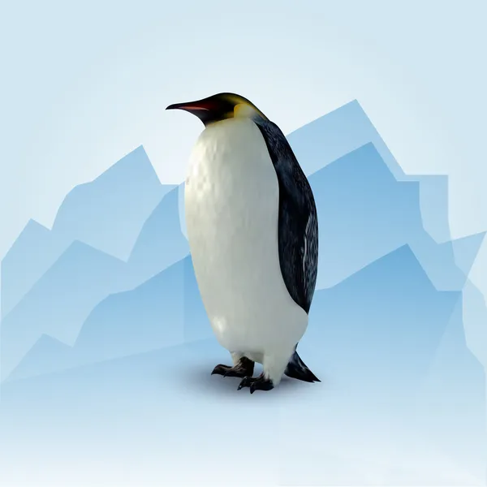
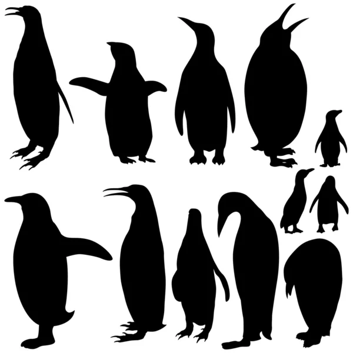
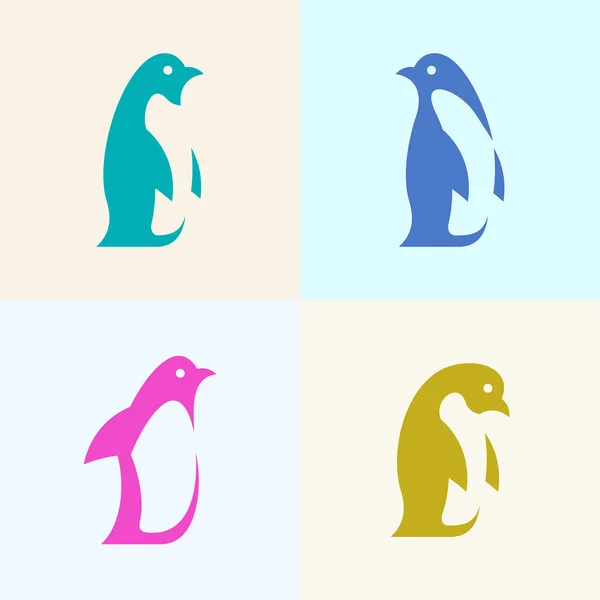
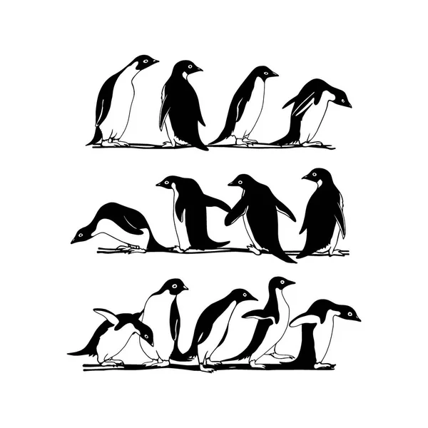
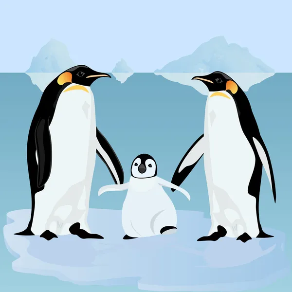
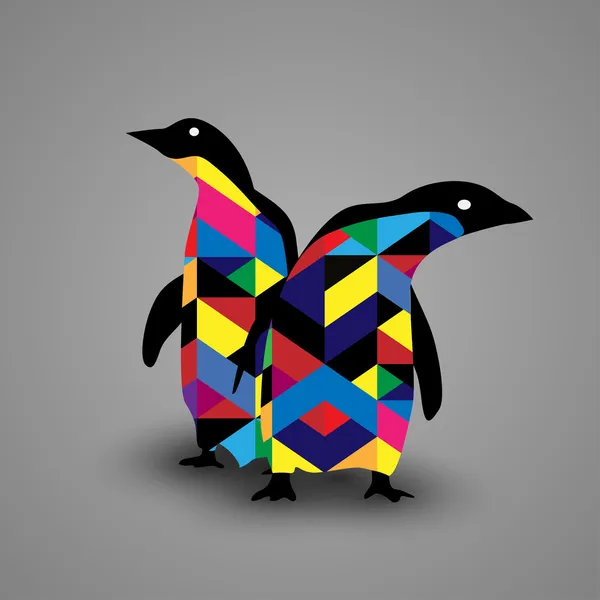
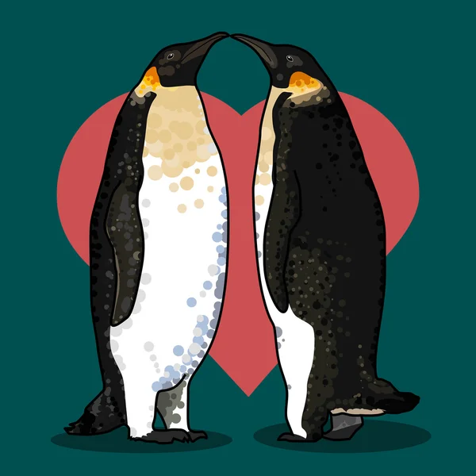

Penguins (order Sphenisciformes, family Spheniscidae) are a group of aquatic flightless birds. All penguins are predominantly black and white in color. Penguins can spend most of their lives in the water. The layer of fat, together with the layer of air, keeps them warm in cold water and in almost any weather.
Penguins & Wikipedia

The largest living species is the Emperor penguin (Aptenodytes forsteri) on average, adults are about 1.1 m (3 ft 7 in) tall and weigh 35 kg (77 lb). The smallest penguin species is the little blue penguin (Eudyptula minor), also known as the fairy penguin, which stands around 30–33 cm (12–13 in) tall and weighs 1.2–1.3 kg (2.6–2.9 lb).
Largests & smallests

18 species of penguins live on earth: Emperor, Royal, Papuan, Adélie, Antarctic, Galapagos, Donkey, Magellanic, Peruvian, Crested, Golden-haired, Schlegel, Snare crested, Thick-billed, Large crested, Magnificent, Blue, and White-winged penguins.
Penguin species
Penguins live in the open sea of the Southern Hemisphere: in the coastal waters of Antarctica, New Zealand, southern Australia, South Africa, along the entire coast of South America from the Falkland Islands to Peru, in the Galapagos Islands near the equator.
Homeland of penguins

Penguins, not only in the water, but also on land, prefer to stay in a flock. In particular, egg-laying, incubation and rearing of chicks in large colonies occur simultaneously in many species. Such colonies can contain up to 5 million animals.
Penguin colonies
The word Penguin comes from the Welsh pen gwyn ("white head"), referring to the extinct great auk (Pinguinus impennis) from the auk family. Sailors could call penguins that because of their external similarity. Before the discovery of Antarctica, the term pinguinus was used in Europe precisely in relation to the great auk.
Word "Penguin"

In most species, each pair produces two eggs, and the mother penguin and father penguin take turns watching the eggs to keep them warm and protected from predators. While one of the parents guards the children, the other gets food. When the chick is born, the parents keep food for him in his mouth.The cubs are fluffy and have a brown color.
Baby penguins

Penguins have taken their rightful place in popular culture. References to them can be found almost everywhere, in books and films, in the design of clothing and home decor, and even in computer programs and sports teams.
Penguins in culture

Basically, penguins choose one partner for life, and during courtship, the male gives his chosen one a stone, which should become the basis for the nest.